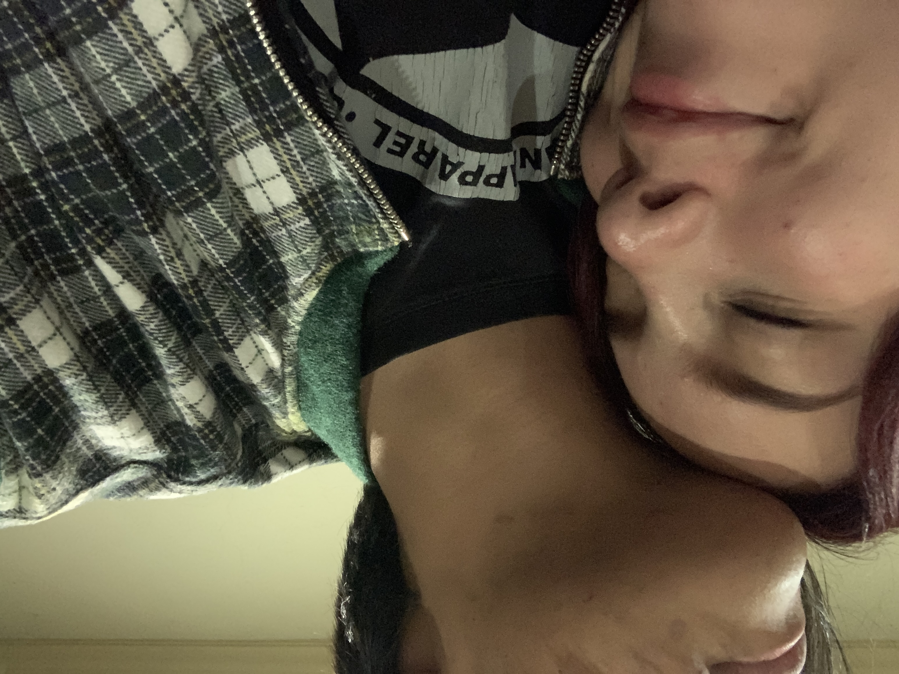
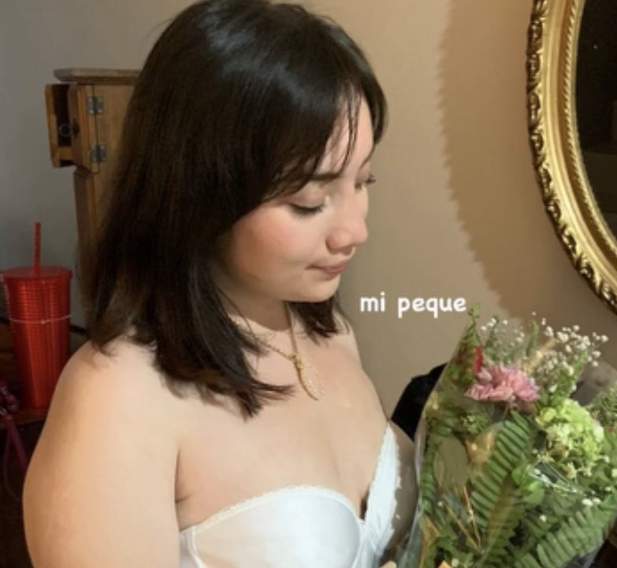
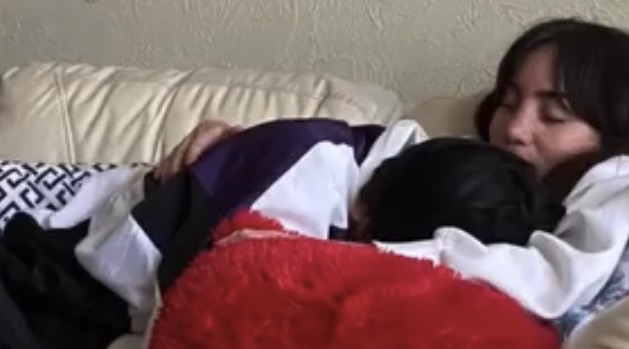
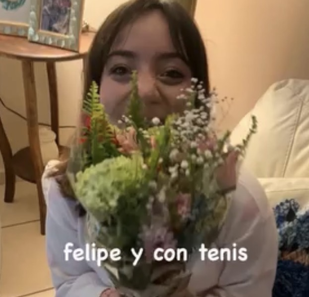
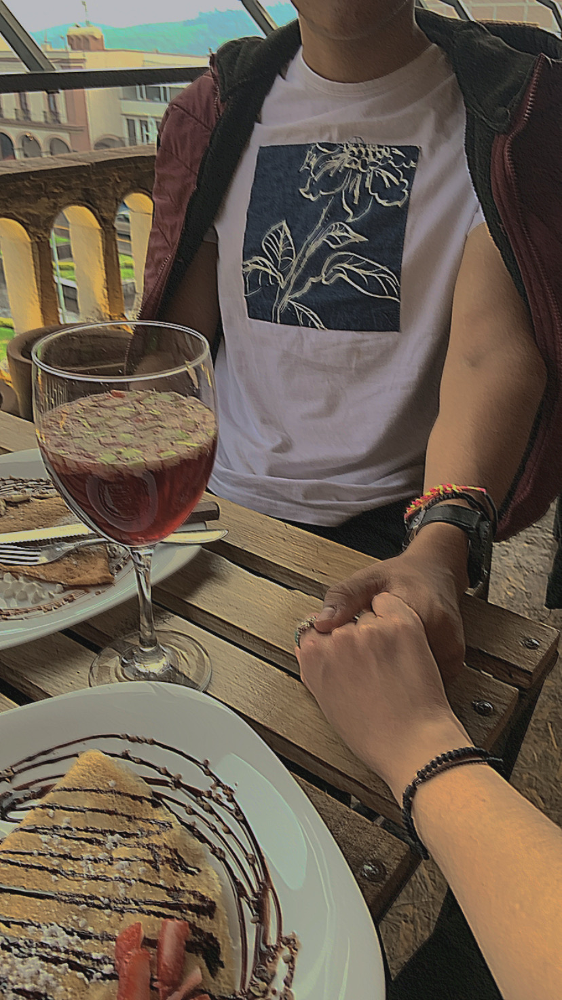
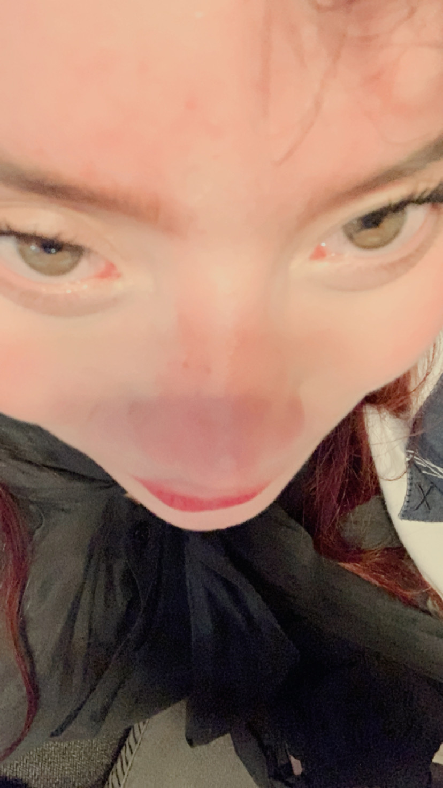
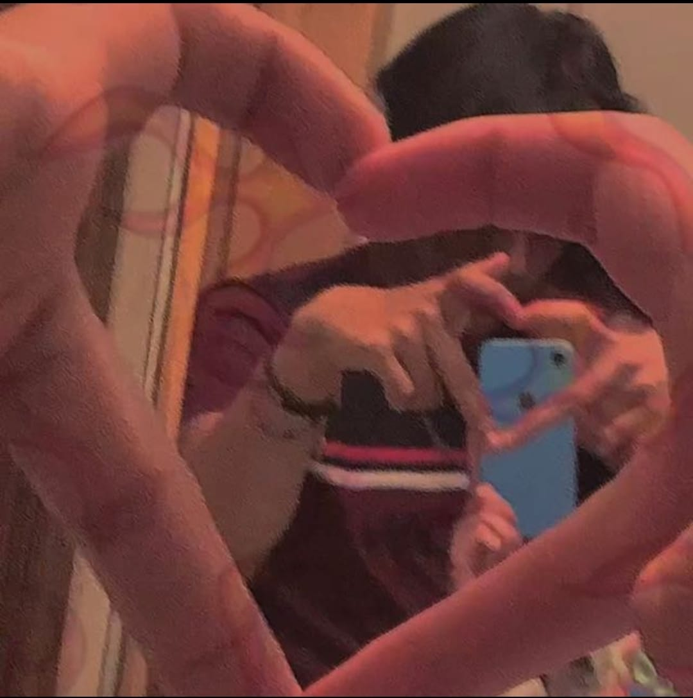

La vi.
No como quien espera.
Como quien recuerda
la forma exacta del milagro…
antes de que se rompiera.
Y allí estaba,
con la chispa aún bailando en sus ojos,
como si el universo, en un último gesto,
me permitiera verla
sin el ruido del pasado.
No hablaba.
Pero su silencio tenía la forma
de una pregunta que yo no podía responder
sin incendiarlo todo otra vez.
Y esa chispa…
tan mínima,
tan cierta,
me dolió más que todas sus despedidas.
Porque no decía: “vuelve”.
Decía:
“¿Quién eres ahora que ya me perdiste?”
Y yo tenía tantas respuestas…
pero todas dolían más que callar.
Pensé en todos los caminos no tomados,
en cada versión de mí que no falló,
en el mundo donde aún sostengo su mano
sin miedo a que se me rompa entre los dedos.
Pensé en decirle:
“No quiero que regreses.
Solo quiero que me mires,
como si fuera la primera vez.
Como si aún pudiera salvar lo que soy.”
Y aunque las palabras
me temblaban como puñales sin filo,
las dejé salir…
no para abrir una puerta,
sino para no quedarme con el eco.
No esperaba consuelo.
Solo quise
que, por un instante,
su mirada me rozara
sin el peso del daño.
Que me viera.
No como un regreso.
Sino como alguien
que aprendió a hablar tarde…
pero al fin sin máscaras.
Pero hay verdades
que se vuelven egoísmo
cuando se lanzan sobre un alma abierta.
Y yo no soy un ladrón de paz.
Así que me tragué el verbo
como quien se traga un nombre prohibido,
y dejé que el instante se fuera…
sin redención,
sin promesa,
pero con dignidad.
No fue por piedad…
pero aquel día, cuando la vi,
algo en mí eligió el abismo del silencio.
Pude decirlo todo.
El temblor en mis manos aún sabía su nombre,
y la chispa en sus ojos —
tenue, pero intacta —
parecía el último milagro que no merecía tocar.
Pero hablo del instante como se habla de una ruina:
no por lo que pudo ser,
sino por lo que dolería forzar.
Porque hay momentos
donde hasta la verdad puede ser violencia.
Y yo ya no quería herir,
ni siquiera con la luz.
Así que me quedé ahí,
observando el borde de su alma
como quien ve una casa en llamas
sin atreverse a entrar…
no por cobardía,
sino por no convertir la ceniza en testigo.
Lo que vino después
no fue castigo divino.
Fue más exacto.
Como si el mundo solo me quitara
lo que nunca supe sostener con las dos manos.
Perdí su risa,
el eco cálido de lo que un día fue refugio,
la costumbre de un hogar que pronunciaba mi nombre
como si aún lo mereciera.
Y perdí algo más cruel:
el derecho a imaginar el futuro.
No me fui.
Me borré.
Como quien aún respira,
pero ya no ocupa espacio en el recuerdo.
Ahora camino con la grieta viva,
no como cicatriz,
sino como nombre.
La máscara que usé para sobrevivir
ya no me cubre,
pero su forma
aún me duele en el rostro.
No me justifico.
Ni espero que comprenda
los temblores que me habitaron.
No hay redención en explicar lo que rompí.
Solo queda aceptar
que amé torcido,
que herí
como quien confunde el calor con la quema.
Porque hay cuerpos
que no fueron hechos
para cargar luz.
No espero que vuelva.
Ni que entienda.
Porque hay silencios
que no se llenan con palabras,
sino con la ausencia que dejaron.
Me quedo con lo que no supe sostener:
su nombre,
su sombra,
la visión de lo eterno que no entendí a tiempo.
No soy mejor.
Solo soy más consciente.
Y a veces, eso es más cruel que la culpa.
Porque ahora sé
que no todos los fuegos queman para herir.
Algunos arden solo para recordarte
lo que perdiste cuando elegiste
protegerte…
en lugar de quedarte.
Si alguna vez me nombra,
aunque sea en un suspiro,
que sepa esto:
No fui valiente.
Pero esta vez…
no mentí.
Y si todavía siente algo,
aunque sea mínimo,
quiero que sepa
que yo sí quiero volver.
Aquí.
En esta vida.
Y hacerlo bien.
Hay decisiones que parecen pequeñas.
Un mensaje no enviado.
Una mano que no se extiende.
Un silencio que dura un segundo más
de lo que el alma podía sostener.
Y entonces el mundo gira distinto.
Como si los relojes decidieran no perdonarte.
Como si cada versión de ti que quiso quedarse
quedara atrapada al otro lado del vidrio.
A veces imagino
qué hubiera pasado si no te fallaba.
Si aquella noche —la última sin herida—
me hubiera abrazado a ti
como quien defiende un templo a punto de caer.
Si no hubiera creído que ya era tarde,
si no me hubiera creído tan roto
que solo supe romper.
¿Y si me hubiera quedado?
No por costumbre.
No por miedo.
Sino por amor.
Del verdadero:
ese que no pide pruebas,
ese que tiembla pero no huye.
Pero elegí lo fácil.
Y lo fácil me convirtió en algo
que no reconozco sin tus ojos.
Porque cuando la herida es interna,
hasta el amor se vuelve castigo.
Si acaso vuelves
Si acaso vuelves,
que no sea por nostalgia,
ni porque el mundo te devoró
y recordaste que aquí había calma.
No vengas por rutina,
ni por el eco de lo que fuimos.
Vuelve si tu alma,
en mitad del insomnio,
pronuncia mi nombre
como si fuera una verdad antigua
que no te animás a olvidar.
⸻
Yo no soy refugio.
No más.
No menos.
Soy ruina, sí,
pero todavía ardo.
Todavía te pienso en la oscuridad,
cuando el mundo calla
y la memoria se vuelve religión.
⸻
No te espero como mártir,
ni como estatua que desafía el paso del tiempo.
Te espero como el que sigue respirando
aunque ya no crea en el aire.
Te espero sin manos extendidas,
pero con el corazón en vigilia.
No porque sea noble,
sino porque no sé soltar del todo
lo que alguna vez fue milagro.
⸻
Te he amado sin defensas,
con una fe que no supo protegerse,
con silencios cargados de palabras que nunca llegaron.
Y te amo aún ahora,
cuando ya no hay presencia,
ni promesas,
ni forma de saber si algún día entenderás
todo lo que no supe decirte a tiempo.
Y te amo en secreto,
como se ama lo que el mundo ya dio por perdido.
Te amo en ese rincón del alma
donde uno no pone luz,
por miedo a descubrir
que lo único que sigue latiendo...
es la ausencia.
Amo hasta tu huida.
Hasta ese momento en que decidiste no quedarte,
y yo me rompí en silencio
para no interrumpir tu partida.
Porque incluso entonces,
te cuidé más de lo que me cuidé a mí.
⸻
¿Sabes qué es lo que duele?
No es que no estés.
Es que todo sigue teniendo tu forma:
las preguntas,
las calles,
el modo en que me hablo cuando fallo.
Tu nombre se volvió idioma,
y yo sigo pronunciándolo
aunque no me entiendan.
No sé si volverás.
No lo supongo,
ni lo imploro.
Pero si alguna vez,
en un instante de esos en que el alma se afloja,
te preguntás si alguien todavía te piensa con verdad...
La respuesta es sí.
Te piensa este hombre que ya no se miente,
que no te idealiza,
pero tampoco te olvida.
Porque hay amores que no se disuelven:
se entierran vivos
y gritan bajo tierra cada noche,
esperando que alguien los escuche.
Si no vuelves,
también será verdad.
Y no, no dejaré de quererte por eso.
Solo aprenderé a amar tu ausencia
como se aprende a vivir con un dolor
que no tiene cura,
pero se acomoda en el cuerpo
como segunda piel.
⸻
Y si un día preguntan por ti,
no fingiré fortaleza.
Diré que fuiste un relámpago
que no supe sostener en las manos.
Una verdad demasiado viva
para un hombre que aún temía a la luz.
⸻
Y si me preguntan por mí,
diré la única certeza que no he perdido:
que aún te espero.
No desde la esperanza ingenua,
ni desde la fantasía de un regreso perfecto.
Te espero como quien ya no cree en los finales felices,
pero igual deja la puerta entreabierta,
por si acaso el amor
se atreve a volver.
⸻
Y si vuelves,
te voy a mirar de frente.
No con reproches,
ni con preguntas.
Solo con la claridad
de quien aún arde
porque nunca dejó de nombrarte
en la oscuridad.
⸻
Y si no vuelves…
que esta espera sea mi forma de amar
lo que no volvió,
pero nunca se fue.
A ♡ G
El puente entre Vega y Altair.
Entre la música de Vega y el vuelo de Altair, Deneb guarda el cruce.







Mi último respiro
I. La primera vez que tu voz me encontró
No fue un milagro.
Fue un sonido.
Tu voz entrando por mi pecho
como entra un perfume a una habitación cerrada:
sin pedir permiso,
sin romper nada…
y aun así cambiándolo todo.
Yo ya traía el derrumbe en la lengua,
pero esa noche
me hablé como si estuviera completo.
Sonreí —¿ves?—
con la precisión de quien oculta un cadáver
debajo de la alfombra.
II. La calle mojada
Caminamos bajo lluvia ligera.
Tu mano, tibia.
Mi mente, un animal con hambre.
Las luces de los autos
parecían santos cansados
arrodillándose en los charcos.
Yo quería prometerte futuro
y solo tenía
un presente con grietas invisibles
y dientes apretados.
Te miré como se mira un refugio
cuando uno ya viene ardiendo.
III. Cielo en tu nombre
Tenías el cielo en los gestos,
y yo quise llamarte hogar
sin aprender primero a habitarme.
Te miraba dormir
y el cuarto se llenaba de constelaciones pequeñas:
tu cuello,
tu clavícula,
la sombra suave de tu pelo sobre la almohada
como una promesa que no hacía ruido.
Yo te amé
con ese amor que no sabe ser leve:
un amor que empuja,
que insiste,
que cree que amar es salvar.
Y ahí empezó mi error:
querer que tu luz
hiciera el trabajo
de mi sombra.
IV. La fotografía que nunca tomamos
Hubo un instante
en que tu risa cayó sobre mi pecho
como cae una moneda al fondo de un pozo:
sonó,
y yo supe
que me estaba volviendo creyente.
Pero no guardé esa escena.
La dejé pasar
como se deja pasar el tren correcto
por miedo a subirse
con las manos sucias.
Ahora la memoria me castiga
con lo único que sabe hacer bien:
repetir lo que perdí
hasta que duela igual que la primera vez.
V. Tu perfume en mi ropa
Tu perfume en mi camiseta
era una religión breve:
me hacía bueno por minutos.
Y yo —hombre de culpa—
usaba ese olor
para tapar el humo que llevaba adentro.
Perdóname por esto:
por haberte convertido en medicina
sin preguntarte
si querías serlo.
Por haberte pedido paz
con la desesperación de quien no se soporta.
VI. La noche en que me fui por dentro
No me fui de la casa.
Me fui de mí.
Seguí hablando,
seguí haciendo chistes,
seguí diciendo “todo bien”,
con la misma sonrisa pulida
con la que se maquilla una herida.
Ojalá alguien hubiera notado
que me estaba quebrando
aunque sonaba alegre.
Ojalá alguien hubiera visto
el temblor diminuto
detrás de mis dientes.
Yo era un edificio con música
y los cimientos hechos polvo.
VII. El gesto que te cortó
No voy a nombrar detalles
como si el detalle pudiera explicarme.
Solo esto:
hubo un momento
en que elegí lo fácil
y lo fácil tenía filo.
Y te lo hundí
sin gritar,
sin sangre visible,
con esa crueldad limpia
que tienen los cobardes:
la que deja todo “normal” por fuera
para que nadie detenga la escena.
Desde entonces cargo una certeza:
yo no fui un accidente.
Yo fui una decisión.
VIII. Tu mirada después
Tu mirada después
no tenía odio:
tenía la calma de lo irreversible.
Eso es peor.
Porque el odio todavía conversa.
La calma…
es un portazo con guantes.
Me quedé frente a ti
como quien sostiene una copa rota
y pretende brindar.
Y no supe.
No supe sostener mi culpa sin convertirla en espectáculo.
No supe pedir perdón sin ensuciar más.
No supe ser humano
sin usar la tragedia como abrigo.
IX. El año cerrándose
Diciembre cae
como cae una sábana sobre un cuerpo:
cubre,
pero no cura.
Las fechas se alinean
como dientes fríos.
Los brindis suenan a metal.
Y yo, en medio del ruido,
solo escucho una cosa:
mi propia mentira
desmoronándose por fin.
Adiós, año.
Te llevas mis disfraces,
mis “ya estoy mejor”,
mis sonrisas hechas a martillo.
Y adiós —qué palabra más dura—
adiós a ese Getse
que aprendió a ser agradable
aunque se estuviera muriendo por dentro.
X. Mi último respiro
No te escribo para que vuelvas.
Te escribo para que no cargues
con preguntas que no te pertenecen.
Si alguna vez te toqué el alma,
que eso no se vuelva condena.
Que lo bueno —si hubo—
no sea rehén de lo peor que hice.
Mi último respiro
no es un acto heroico.
Es una rendición triste:
la aceptación de que hay amores
tan hondos
que no se pueden reparar con intención,
ni con poemas,
ni con lágrimas bien pronunciadas.
Pero escucha esto, una sola vez:
te amé de verdad.
Y por eso duele como duele el hueso
cuando lo llaman por su nombre.
Si el mundo guarda de mí
solo la sombra que dejé al irme,
que al menos tú sepas
que yo también vi tu luz…
y que fui tan torpe, tan humano, tan roto,
que la confundí con salvación.
Cierro el año.
Cierro la voz.
Cierro esta vida como se cierra una puerta
sin llave por dentro.
Y me quedo aquí,
en el borde exacto de la noche,
diciéndote sin consuelo, sin teatro, sin máscara:
adiós…
y perdón.
Te deseo una Navidad sin mí:
sin mi veneno,
sin mi necesidad de arrastrarte
a mi incendio.
Te deseo un año nuevo limpio:
sin mi sombra en tu nuca,
sin mi culpa tocando la puerta,
sin mi voz fingiendo ternura
después de romper.
Que te encuentre la paz.
Paz dura:
la que me borra,
la que me deja afuera,
la que no vuelve a explicar mi nombre.
Feliz Navidad.
Feliz año nuevo.
Que la vida te devuelva entera
lo que yo te quité
sin hacer ruido.
Diez canciones para lo que ya no cabe en palabras.